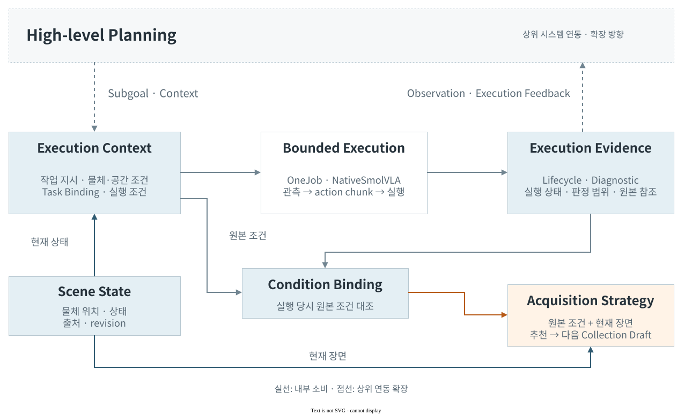
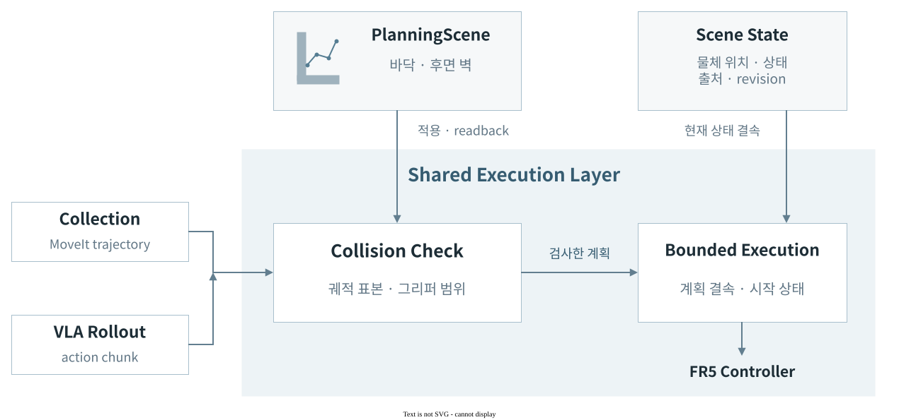

프로젝트 전체 ↗ 시스템 설계
System Architecture Task 조건을 실물 실행과 다음 수집까지 연결한다.
Planning–Execution Interface

장면 상태의 근거와 실제 소비 ↗
기존 계약과 실제 소비자 실행 전 원본 조건 보존 ↗
계약 핵심 필드 현재 소비 Scene State 물체 위치·상태 현재 실행 조건·수집 추천공유 상태와 근거 ↗ Task Binding task_idspatial_bindingsbinding_digestCollection의 계획·실행정의와 원본 ↗ NativeSmolVLA task동작 예측·유한 실행 계획실제 정책 입력·출력 ↗ Execution Diagnostic checkpointexecution_tracehuman_semantic_decisionCurator가 원본 lifecycle에서 진단을 검증하고 수집 조건에 대응정의와 원본 ↗ Collection Recommendation input_snapshotconditionssamplingCampaignOperator의정의·소비·회귀 ↗
원본 실행 조건은 현재 장면과 구분해 보존한다. 현재 장면의 v2 추천 은 호환되는 기록과 원본 조건을 소비하며, 기존 계획의 미관측 slot을 갱신하는 v1 경로도 유지한다. 실행 진단의 작업 전체 효과는 UNKNOWN으로 보존하며, 사람이 실패로 판정한 실행 구간은 해당 조건의 재시연 제안에 사용한다.
상위 시스템으로의 확장 근거 현재 입력은 Pick·Pick & Place의 작업·공간 계약이다. 출력에는 정책·실행 기록·판정 범위를 남긴다. 이 대응을 task planning이나 simulation의 후속 판단에 활용하는 연동을 고려했다.
구현된 소비자는 Collection의 수집 추천·초안 갱신 경로이다. 상위 planner·simulator의 소비는 확장 방향이다.
EmbodiedSkills·HiRoC·VISTA·Anticipation-VLA·Gemini Robotics ER 2 비교 ↗
Collection Operator Curator NativeInspection Policy Learning
작업 계획에서 저장 데이터로 받는 자료 작업 계획 물체 위치·각도
처리와 실행 조건 OneJob 승인한 계획·Scene State·시작 상태 일치 바닥·벽 readback + 궤적 충돌 검사 기록기의 첫 표본·신호 품질 확인 남기는 결과 저장 데이터 두 카메라 영상 + 7차원 상태·동작
Dataset Validator로 전달 저장 기록에서 학습 요청으로 받는 자료 수집 기록 시연 원본 위치
처리와 실행 조건 Curator · Selection 같은 데이터셋의 중복 없는 시연 기술 검사 PASS + 작업 판정 PASS 발행 직전 원본·판정 상태 재확인 남기는 결과 학습 요청 선택한 시연 목록
배치 검토 또는 위임 기반 학습으로 전달 검토 대상에서 Rerun 탐색으로 받는 자료 학습 검토 목록 검토할 시연 선택
처리와 실행 조건 NativeInspection 선택한 시연이 검토 목록에 포함 변환 전후 데이터 식별값 일치 영상·상태 차원과 원본 프레임 대응 남기는 결과 Rerun · 동기 탐색 두 영상 + 상태·동작 그래프
탐색 종료 후 같은 검토로 복귀 승인된 입력에서 재사용 가능한 정책으로 받는 자료 학습 입력 선택한 시연 + 원본 식별값
처리와 실행 조건 Training Entrypoint 현재 데이터와 승인 범위 일치 카메라·상태·작업 지시 계약 일치 학습·평가 분리 + TRAIN 통계 계산 남기는 결과 LeRobot · SmolVLA checkpoint + 정규화 통계
같은 조건의 재로딩·오프라인 평가 개발 범위
기반 기술과 구현 모듈 기존 기술의 역할과 이 프로젝트의 구현 기반 기술 담당 기능 프로젝트 구현 FR5 · ROS 2 로봇 인터페이스와 수집 조건과 작업 순서, 반복 실행, LeRobot 데이터셋·학습기·saved processors FR5 센서 시간 정렬, 품질 검사, SmolVLA 사전 학습된 실물 task 데이터로 미세 조정, Rerun 동기화된 영상·신호 탐색 검토 대상 연결, 원본 프레임 대응,
LeRobot × FR5 LeRobot 모델 로딩 · saved processors
FR5 Execution 장비 상태 · 단일 동작 실행·취소
Live RGB · Robot state → saved processors → 50-step prediction
실물 입력 기반 단일 추론 확인 · 학습 동작 미전송
10 s 로봇 상태의 연속 전달 실물 FR5 · 자세 유지 조건
학습 정책의 Pick & Place 성공률은 별도 실물 평가 대상이다.
Scene & Execution 
충돌 검사는 등록된 환경 형상과 궤적 표본을 기준으로 한다. 실행 제어와 데이터 저장의 분리 로봇 동작과 파일 저장은 끝나는 시점이 다르다. 두 상태를 분리해 저장을 기다리는 동안에도 안전한 복귀를 수행한다.
OneJob은 동작 순서를, Recorder는 기록과 저장을 맡는다. 저장 응답이 늦어져도 로봇 동작을 중복 실행하지 않는다.
임시 저장 → 실행 종료 확인 → 저장 확정의 순서로 완료 데이터와 중단된 작업을 구분한다.
실제 운용
Pick 시연의 실행·저장 시간 이전 Pick 수집의 실행 기록이다. 들어 올리기 후 기록을 끝내고 재배치·복귀와 파일 저장을 처리했다.
Pick 시연의 실제 실행·저장 시간. 준비 표본을 제거한 시점을 0초로 삼았다. 회색 구간은 기록 종료 상태이며 저장 함수의 처리 시간을 나타내지 않는다. 작업별 기록 구간 살펴보기 ↗ 운영 화면
운영 화면과 상태 관리 실행 상태를 서버에 보존해 브라우저가 끊겨도 같은 작업을 이어서 확인한다.
명령에 화면의 버전·해시를 함께 보내 현재 상태와 대조한다. 오래된 화면의 명령이 새 상태를 덮어쓰는 것을 막는 낙관적 동시성 제어이다.
재접속 시 서버의 현재 상태를 읽는다. 응답을 놓쳐도 수집 명령을 다시 실행하지 않는다.
단일 운영자 PC를 전제로 한다. 브라우저 채널 토큰은 사용자 신원 인증이나 학습 사용 권한을 대신하지 않는다.